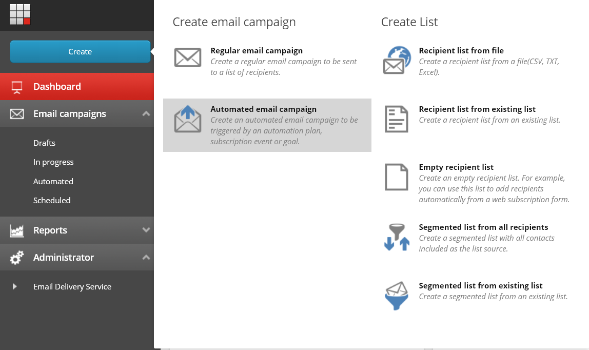
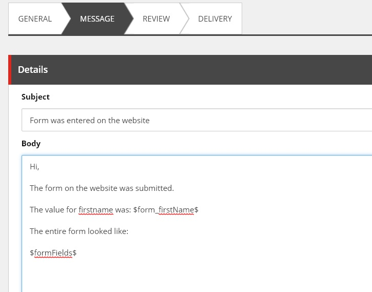
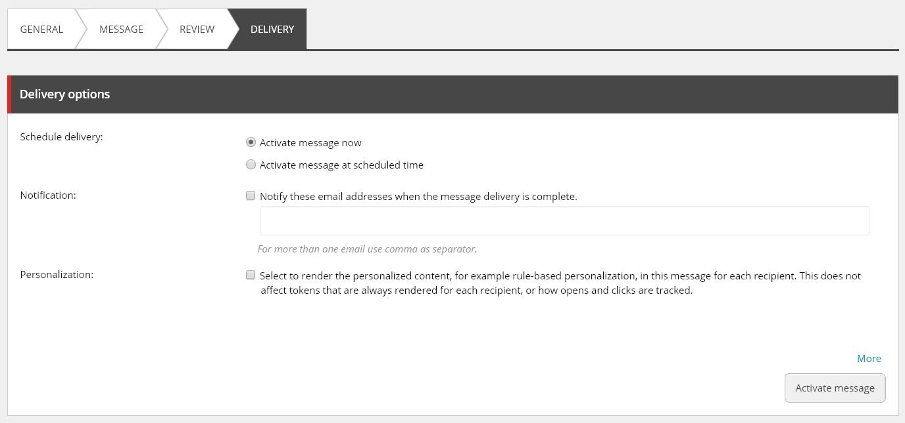

Create an automated message in Email Experience Manager¶
The “Send Email” submit action works in collaboration with Email Experience Manager (EXM).
Learn here, how to setup an email to be used for the send mail action.
Creating a new automated campaign¶
First, go to Email Experience Manager and create a new automated message.
Take any of the available templates. In the best case, some custom tailored templates are provided by the developers for your site.

Fill in the general info like “from” name and email.

Use the template to fill in the body of your email message.
Finally, we need to activate the message in the delivery tab. Only activated message will be available to use on the “Send Mail” action.
Using form values in the email¶
To print the form data entered by the visitor in the email, you must use tokens. These tokens will be replaced with the actual values when someone submits the form and an email gets send out.
The form fields can be referenced individual, field per field, or you can use one token that will print all values from the form in one token.
Using individual tokens¶
In the forms module, each field you add should be given a name.

Use this name to contruct the token.
Token format:
$form_fieldname$ where fieldname should be replaced by the name of the field.
So in this case this would be $form_firstName$
Print all field values with one token¶
Use the token $formFields$ to print all fields with their value in the email.